Social Posting
Social Posting feature is an important feature of ChatPion. With the feature, you can schedule and publish posts on Facebook, Instagram and other social media such as Twitter, Linkedin, Reddit, Wordpress(self-hosted), and Medium. You can schedule and publish multimedia post— text post, image post, video post — CTA post, Carousel/Video post, Link post, Html post, Auto post — Rss Feed and Youtube video post. The Social Posting feature also has Bulk post planner. And with the Bulk post planner, you can create multiple posting campaigns by uploading a single CSV file.
In this article, I will show you how to publish and schedule posts on Facebook, Instagram and other social media with Social posting feature of Chatpion.
Let’s see how to schedule and publish posts on different social media.
To create Facebook, Instagram, and other social media posting campaign, First, go to the Dashboard of the ChatPion. At the left-sidebar of the Dashboard, you will a menu called Social Posting.
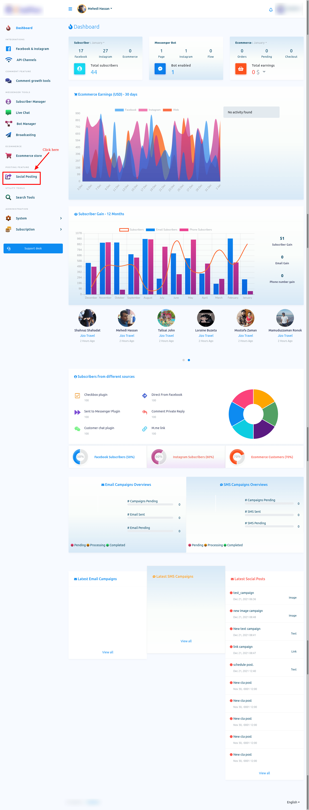Click on the Social Posting and instantly a page will appear. The page is divided into two sections – Facebook & Instagram Poster and Social Poster. To create a Posting campaign on Facebook and Instagram, you have to work on Facebook & Instagram Posting section.
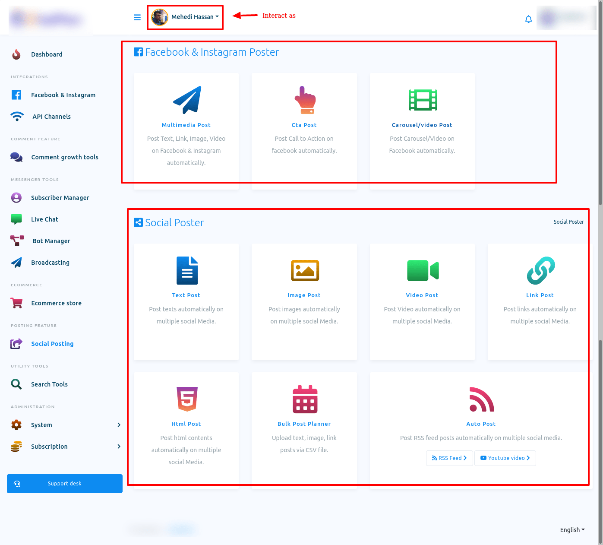Facebook & Instagram Poster
Multimedia Post
To create Multimedia Post(Text, Link, Image, video), click on the Multimedia Post. Instantly, the Multimedia posting page will appear with a create new post button. And already created campaigns will be here as a list.
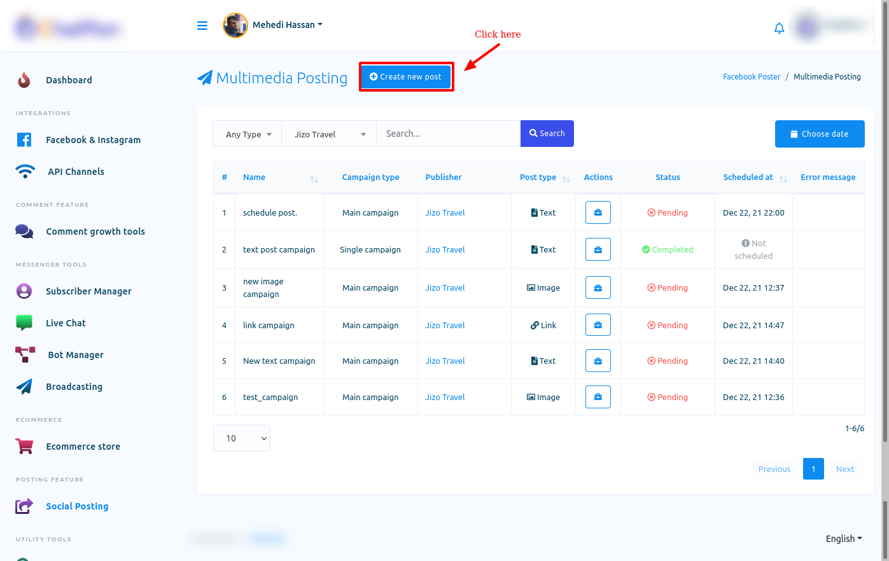Well, to create a campaign, click on the create new post button. Instantly, a page will appear with some fields. To create the campaign, you have to fill-up the fields. First, you have to select a Facebook page the post will be published. Also, you can select an auto-reply template for the post.
Text Post
Text option is already selected by default. Therefore, if you want to create a campaign for text post, just write the name of the campaign in the field called campaign name. Then write your text in the field called Text.
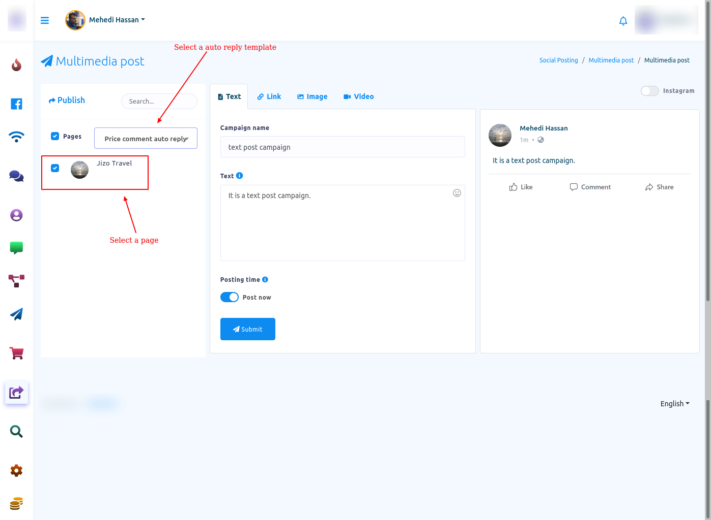Posting now is selected by default. Therefore, if you want to publish the post now, click on the submit button. And without delay, a successful message will appear on a box.
On the other hand, if you want to schedule the post, turn off the radio button called Post now. To see the details of the posting time, hover your mouse over the tooltip button.
Well, just as you turn off the post now button, some additional fields will appear. Now you have to fill out the fields.
In the schedule time field, you have to provide the date and time the post will be posted on. Just as you click on the schedule time field, a calendar with the date and time will appear. From the calendar, you have to select the date and time.
After that, you have to select the time zone. Click on the Time Zone field and instantly a drop-down menu of different time zone will appear. From the drop-down menu, you have to select your time zone.
Now you have to specify how many times the post will be re-posted. Give a number on the re-post this post fields. And this post will be posted the number of times you specified.
Now click on the time interval field and a drop-down menu of different time intervals will appear. From the drop-down menu, select a time interval.
Now click on the submit button and the post will be scheduled and you will see a successful message.

Link Post
To create a campaign for Link post, select link option. Instantly, an extra field called Paste link will appear. You have to provide a URL in the Paste link field. Instantly, the preview of the URL will appear at the right side of the page. Other than that, everything is the same as the text post.
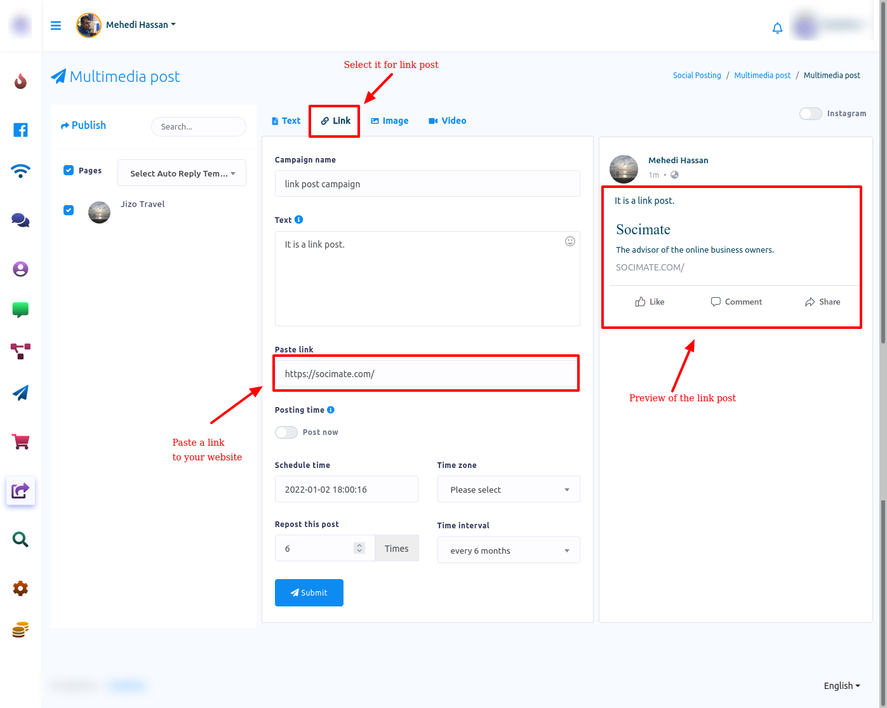Image Post
To create a campaign for Image post, select Image option. Instantly, a field called url and upload button will appear. By clicking the upload button, upload an image. Just as you upload an image the url field will be filled with the local link of the image and miniature version of the image will appear under the upload button. And the preview of the image post will appear on the right side of the page. By clicking on the upload button, you can upload more images. And the images will be saved for later use. And the miniature versions of the images will appear. By clicking on an image, you can select it for an image post.
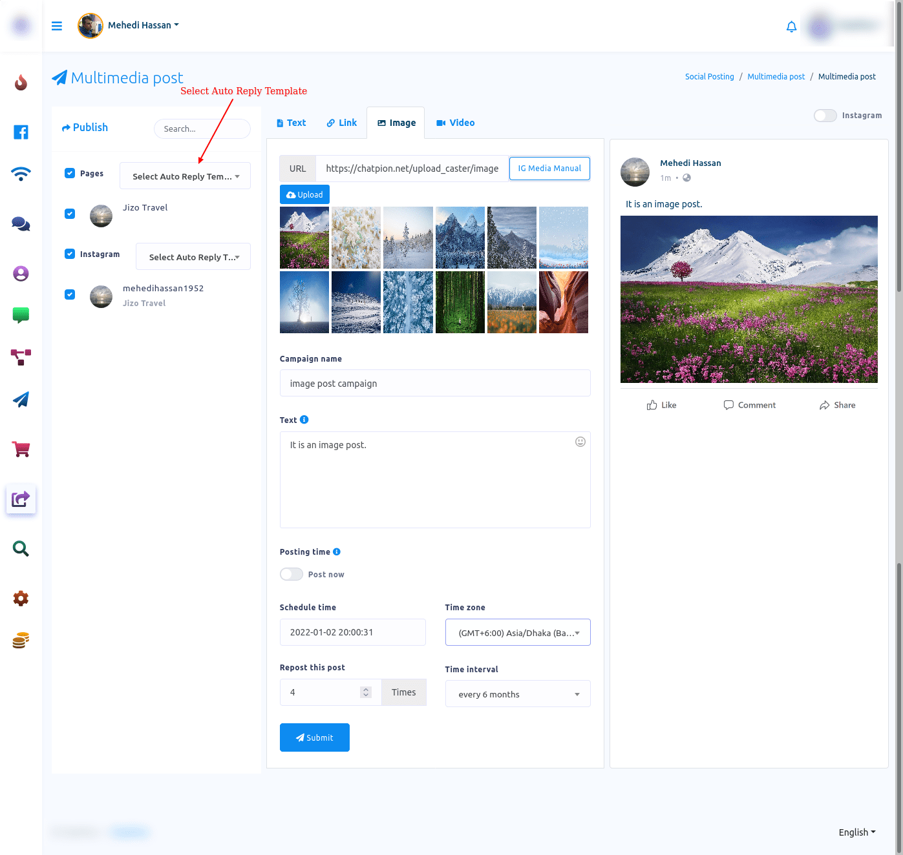Also will appear two buttons called edit and delete. By clicking on the edit button, you can edit the image. Click on the edit button and instantly, an image editor with the image will appear. On the editor, you can edit the image. After you have edited the image, just as you click on the Save image button, the edited version of the image will appear. And by clicking on load button, you can upload another image to edit. Other than that, everything is the same as the text post.
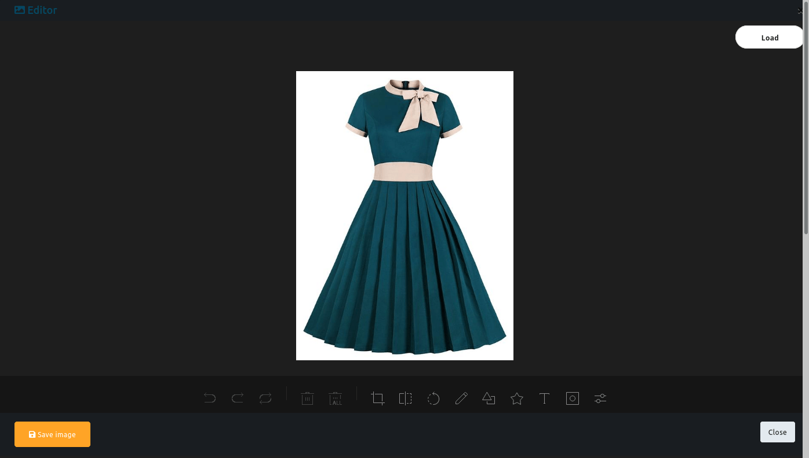Video Post
Video post is the same as image post.
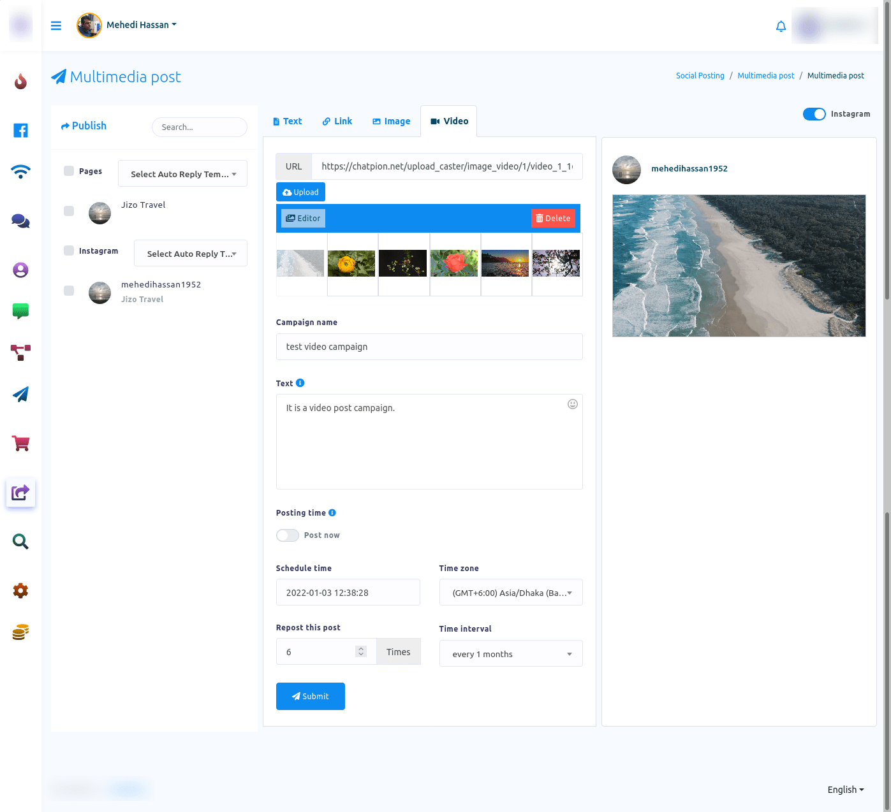Call To Action Post
Let’s see how to create a campaign for Call To Action post. Now click on the Cta post and a page called Cta poster will appear with a button called Create new post.
Click on the create new post button and a page called add cta post will appear with some fields. To create a campaign for cta post, you have to fill-out these fields. 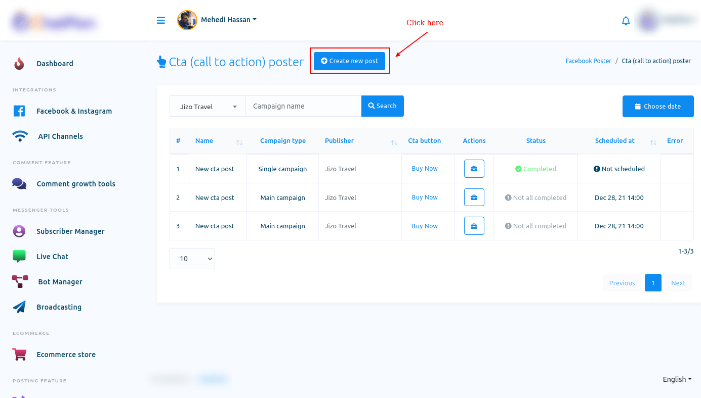First, give a campaign name in the Campaign name field. Then write your message in the message field. This message support spintax. In the past link field, past a link where the user will be redirected. Then you have to select a button from the cta button type. Click on the cta button type field and drop-down menu of different button types will appear. From the drop-down menu, select a button type.
Well, the cta button action link field will automatically filled with the link you have pasted on the paste link field. From the pages to post field, select a page you want to post on. Of course, you can select multiple pages.
You can also select a template from the auto-reply template field. Click on the field and a drop-down menu of different pre-defined templates will appear. If there is no predefined template, you have to create a template first.
Posting now button is turned on by default. By turning off the post now button, you can schedule the post. Turn off the button and some fields will appear. And like before you have to fill-out these fields to schedule the call to action post.
Now click on the create campaign button, a successful message will appear. That is, the campaign has been created.
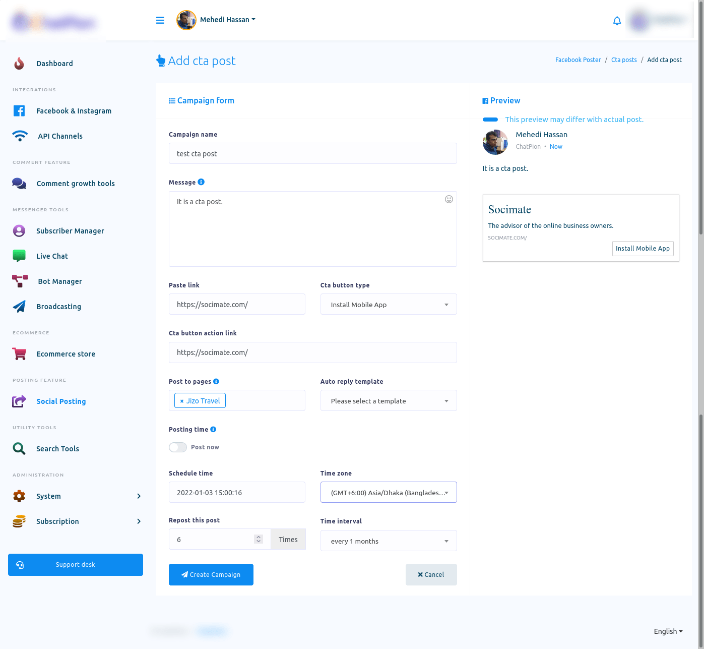Carousel/Video post
To create a carousel/video post, click on the Carousel/video post option and a page called carousel/slider poster will appear with a button called Create new post.
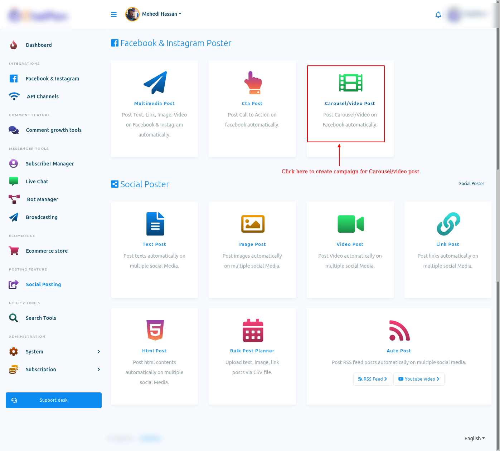Click on the create new post button and instantly, a page called video/carousel poster will appear with some fields.
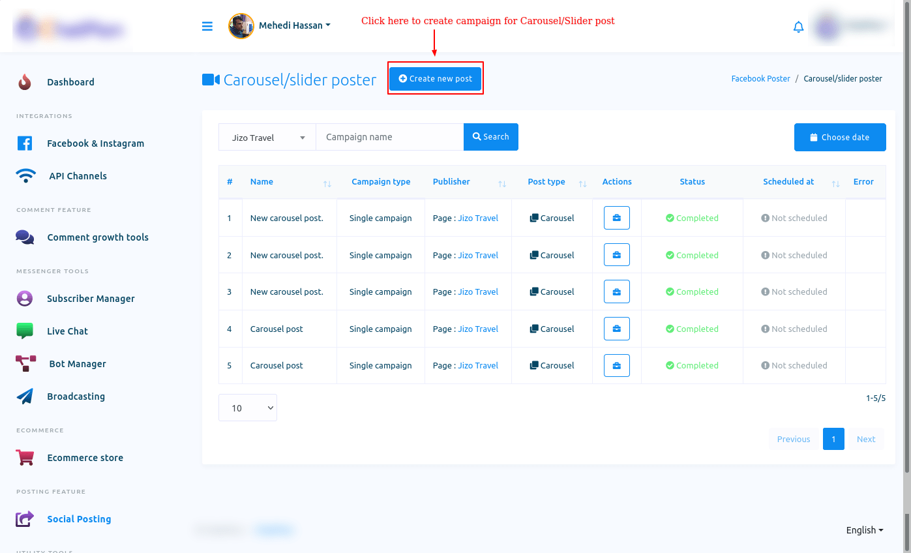To create a campaign for carousel post, select carousel option. After that, give a campaign name in the campaign name field. Then select a page from the pages to post field. In the slider link field, give a link that will appear at the last of the slider. In the message field, write a message.
Then you will see slider content option with some fields. Give a title in the title field. Then paste a link in the action link field. Give a description in the field called description. Then upload an image. After uploading an image, the local link of the image will appear in the image link field.
To create a carousel post, you have to add at least two slider content. Well, to add another slider content click on the add more content button. And instantly, another slider content option will appear. And like before you have fill-out the same type of field.
After that, if you want to schedule the post, just turn off the post now button and some field will appear. Now like before, you have to fill-out the field.
Now click on the create campaign button and you will see a successful message. That is, the campaign has been created.
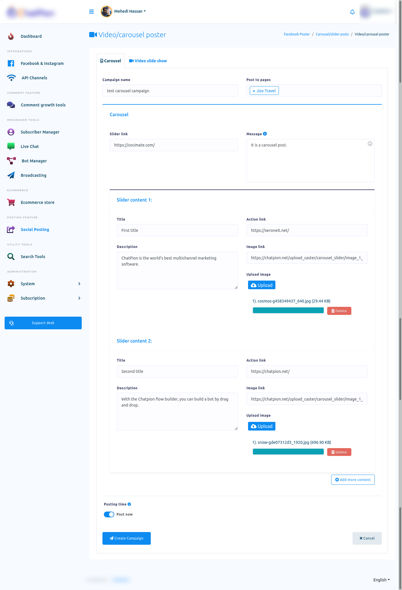Video Slide Show
To create a campaign for video slide show, please select the video slide show option.
Then you have to give a campaign name in the campaign name field. After that, select a page in the post to pages fields. Of course, you can select multiple Facebook pages.
Then come the video-slide section.
In the message field of the section, write a text message. In the image duration field, select an image duration in seconds from a drop-down menu.
In the transition duration field, select a transition duration in seconds from a drop-down menu.
Then in the image content section, you have to upload an image by clicking on the upload button.
To make a Video Slide show campaign, you have to provide at least three images and corresponding information.
You can provide more images by clicking on the Add more image button.
Well, provide at least three images and click on the create campaign button.
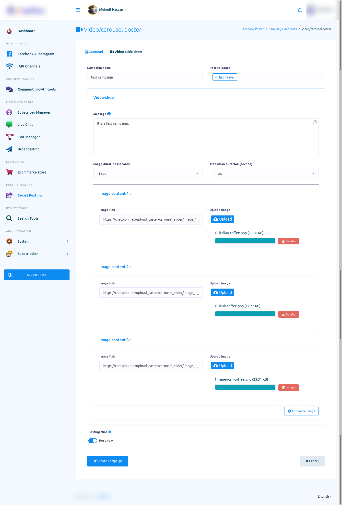Social Poster
Now come to the Social Poster Section. With the Social Poster, you can create a campaign to post on different social media such as Facebook, Twitter, Linkedin, Reddit, Wordpress and Medium. That is, a campaign will publish and schedule posts on different social media.
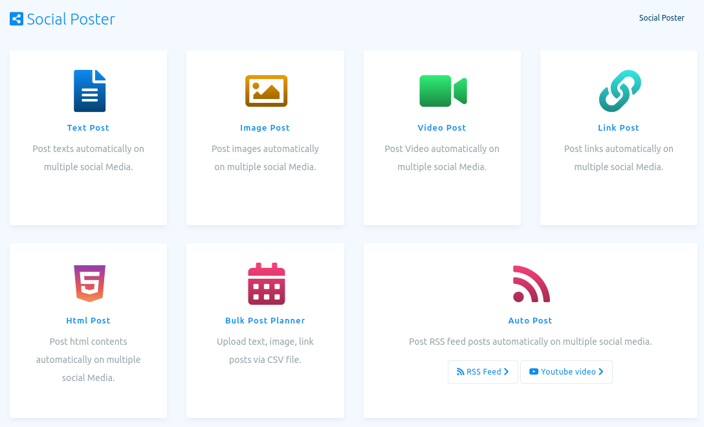Social Poster Text Post
To create text post for different social media, click on the Text post option of the Social Poster section. Instantly, a page called Text post with Create new post button will appear.
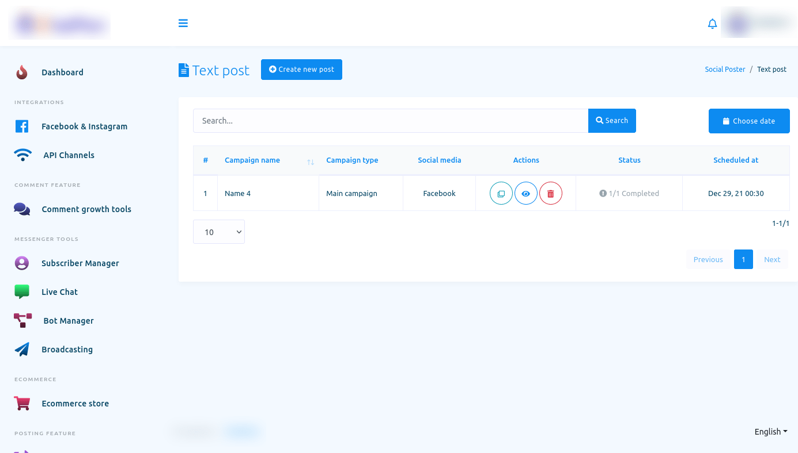Now click on the Create new post and a page called create post will appear with some fields. To create a text post, you have to fill out these fields.
Write a name of the campaign in the campaign name field. Then give a title for the reddit and medium in the Title(reddit, medium) field. Then write a text message in the Message field.
To shcedulde the post, turn off the post now button and fill out the scheduled time-related fields.
Then you have to select a Facebook account and the pages of the account you want to post on. Of course, you can select multiple Facebook pages. After that, you have to select the social media you want to post on.
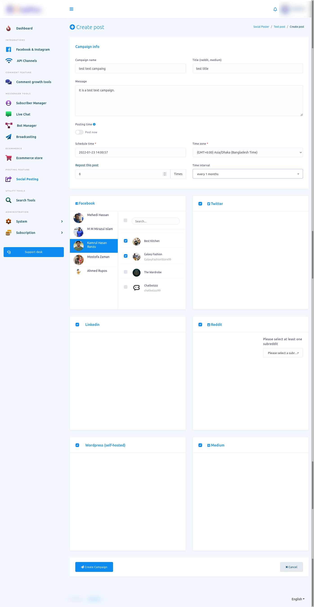Social Poster Image Post
To create an image post for different social media, click on the Image post option of the Social Poster section. Instantly, a page called Image post with Create new post button will appear.
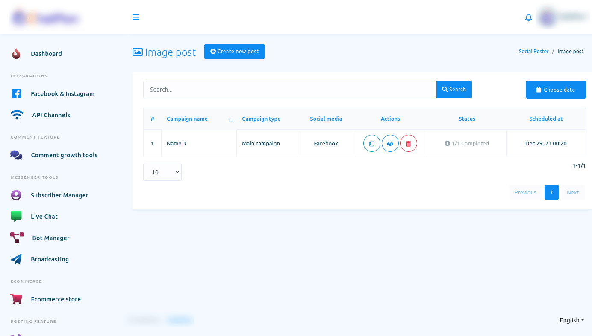Now click on the Create new post and a page called create post will appear with some fields. To create a text post, you have to fill out these fields.
Write the name of the campaign in the campaign name field. Then write a message for Facebook and Twitter in the Message(Facebook, Twitter) field.
Then give a title for the Blogger, Wordpress, Medium in the Title(Blogger, Wordpress, Medium) field.
After that, you have to upload an image by clicking on the upload button.
Then you have to write a text message in the Rich Content(Blogger, Wordpress, Medium) field.
To schedule the post, turn off the post now button and fill out the scheduled time-related fields. Otherwise, keep the button turned on.
Then you have to select a Facebook account and the pages of the account you want to post on. Of course, you can select multiple Facebook pages.
After that, you have to select the social media you want to post on.
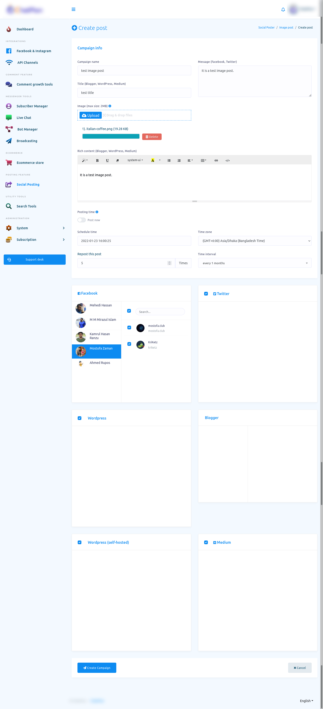Social Poster Video Post
Creating a video post for different social media is just the same as creating an image post. You just have to upload a video and a video thumbnail instead of uploading an image.
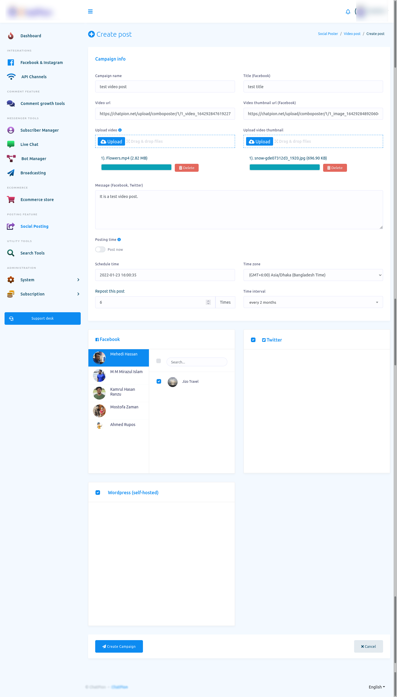Social Poster Link Post
Creating a Link post for different social media is just the same as creating an image or text post. You just have to upload a thumbnail image by clicking on the upload button and paste a link in the Link field.
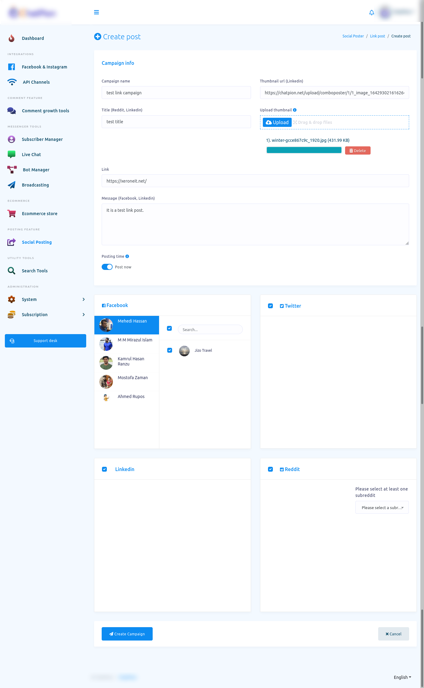Html Post
Creating a Html post for different social media is just the same as creating a text post. In the Html post, there will be Rich content field instead of Message field. In the Rich content field, you can provide Html by selecting HTML tag in the Rich content field.
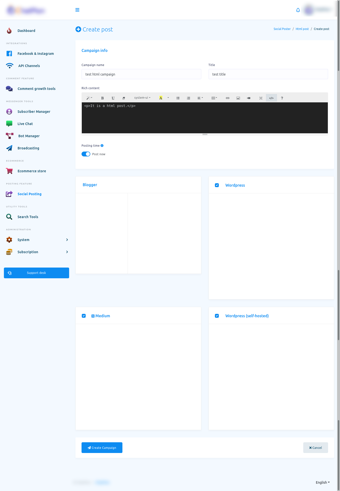Bulk Post planner
With ‘Bulk Post Planner’, you can create thousands of campaigns to post on different Social media including Facebook by uploading a single CSV file.
To create a lot of campaigns with Bulk post planner, click on the Bulk post planner option.
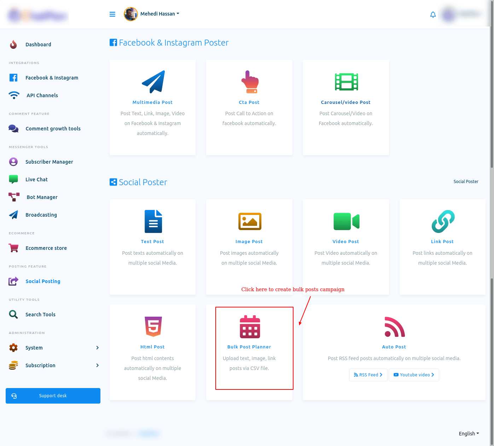And instantly, a page called post planner will appear. At the beginning of the page, you will see the instruction on how to create a lot of campaigns on different social media by uploading a single CSV file.
Read the instruction carefully, before creating campaigns with the bulk post planner.
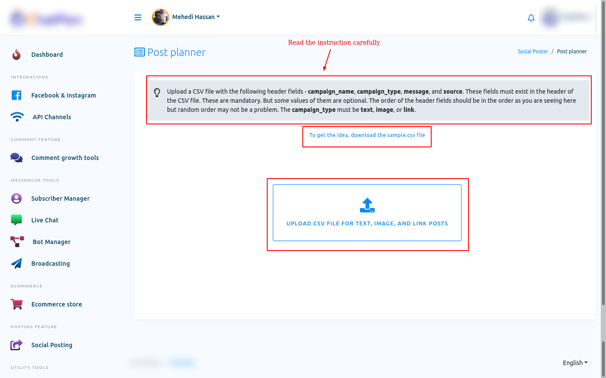You can also download the sample CSV file to get the idea on how to organize the csv file. With the Bulk post planner, you can only create campaigns for Text, Image and Link post.
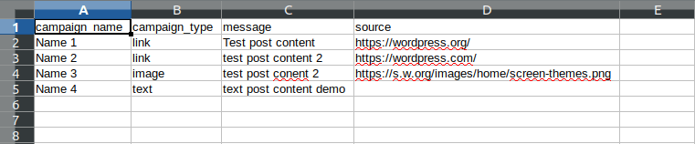To upload the csv file, click on the upload button and upload the csv file.
In the CSV file, you just have to provide the campaign name, campaign type, message and source for link and image post. After you have provided this information on a CSV file, you have to upload the file.
To upload the CSV file, click on the upload button and upload the CSV file. After you have uploaded the CSV file, the post planner page will appear with the two buttons called manual and automatic.
Manual
The Manual button is selected by default. When the manual button is selected, you will see the list of campaigns with the campaign name, campaign type, source, and action.
Under the actions option, you will see the date and time field. And you have to provide the date and time. On the time and date, the post will be published.
Just as you click on the date and time field, a calendar with the date and time will appear. From the calendar, select a date and time. In the manual settings, every post will be published on the specific date and time you have selected for the post. In the manual settings, every post will be posted only once.
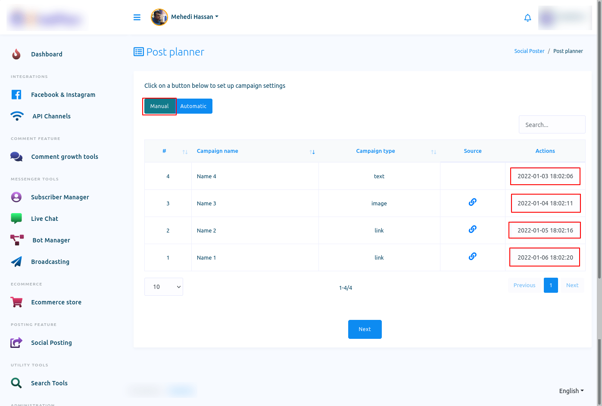Automatic
In the automatic settings, all the posts will be scheduled to be published. When you select the autonomic option, some fields will appear. You have to fill out the fields to schedule all the posts in the campaigns.
In the post start datetime field, you have to select a date. From the date, the posts on the campaign will start to be published. After that, you will see a field called post between two times. In the field, you have to set two times and the post will be published between the times.
In the post-interval fields, you have to select a time from 1 minute to 6 months. Now click on the field and drop-down menu of different times will appear. From the drop-down menu, select a time for the post-interval.
In the field called repost, you have to provide a number that many times the post will be republished.
In the do not post on days field, you can select a day when the posts of the posts of the campaign will not be published.
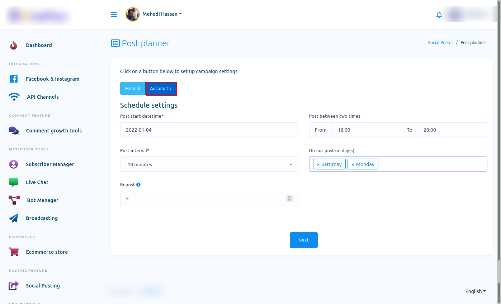After that, click on the next button and a modal form will appear with some fields. Now you have to fill out the fields.
Select your time zone in the posting time zone fields. Then post to Facebook pages field select Facebook pages where you want to publish the post. You can select multiple Facebook pages.
Then on the post to Twitter accounts, select your twitter accounts – you can select multiple Twitter accounts. Likewise, select Linkedin, Reddit, and subreddit.
Then click on the create campaign button. And you will see a successful message. That is, you campaign has been configured.
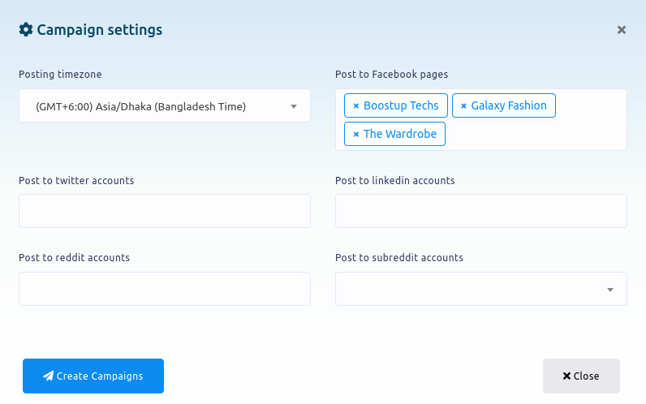